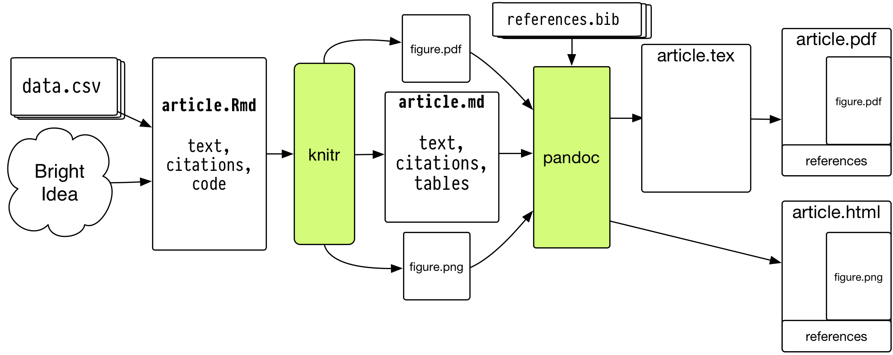

Data Visualization Week 1
Kieran Healy, Duke University
Outline for Today
- Housekeeping
- Motivation and Goals
- Up and running with R and RStudio
- What we are Good and Bad at Seeing
- A First Figure in R
Housekeeping
http://socviz.github.io/soc880/
- Slides, code, and other material will be available there.
- The site is hosted on GitHub.
- Take a look at that here: https://github.com/socviz/soc880
- Soon we'll get you access for private repositories where you can put your assignments.
How to Navigate these Slides
- When you view them online, notice the compass in the bottom right corner
- You can go left or right, or sometimes down to more detail.
- Try hitting the down arrow now.
Hello from down here
- Hit the up arrow to return to the main line of slides.
How to Navigate these Slides
- When you view them online, notice the compass in the bottom right corner
- You can go left or right, or sometimes down to more detail.
- Try hitting the down arrow (or swiping down) now.
- Hit the Escape key to get an overview of all the slides. On a phone or tablet, pinch to get the slide overview.
- You can use the arrow keys (or swipe up and down) in this view as well.
- Hit Escape again to return to the slide you were looking at. On a phone or tablet, tap the slide you want.
We want to create pictures of data that people, including ourselves, can look at and learn from
- Slides and other material for this class will be fairly interactive and hands-on. More like working notes than the sort of thing you would present as finished work, or to an audience
- Code you can use in R will look like this:
## This is a comment
data <- c(1, 1, 4, 1, 1, 4, 1)
data
## [1] 1 1 4 1 1 4 1
- The first box shows something you can type into the R console. The second shows what you'd see as output if you did.
How to take notes in this class
- Use a text editor. Not MS Word. It's easiest to work with RStudio. Create a new project there.
- We will want to alternate back and forth between bits of code and explanatory notes to ourselves, commentary, or other material. We need a format to do this in that still allows us to work in R easily.
- Create an RMarkdown file in the directory. RStudio sets up a quick template for you. Save the file, calling it
week-01-notes.Rmd. - You won't use RMarkdown for everything you do. Very short project might just need a single
.rfile. Very large projects may need more organization. - But it's good for taking notes while also working with snippets of code. Note that RStudio has various keyboard and menu shortcuts to help you edit quickly.
- RMarkdown documents can have all kinds of options and other paraphernalia added. Never mind about those for now. Just stick with the defaults.
What's happening behind the scenes

- RStudio will take care of this for you, so don't panic.
Why does it need to be so cumbersome?
- You may be used to thinking of your final document (e.g. a Word file, PDF, or presentation slides, or the tables and figures you make) as what's "real" about your project.
- It's better to think of the data and code as what's real, together with the text you write.
- The idea is that all of the finished output---figures, tables, etc---is, as much as is reasonable, procedurally and reproducibly generated from your code, data, and text.
- Reproducibility is important to the scientific process. But the reality for most of us is that the person you most want to be able to reproduce your work is you, six months or a year from now.
This still seems like kind of a pain in the ass
- Working in plain text can be annoying.
- But we need to write code that R (or Stata) can understand.
- And we really do need to have a way to remember what we did.
- Plain text files are a robust and easy-to-share format.
- So, as much as possible, keep things simple inside your files.
When working in R ...
- Make sure you know where you are.
## Get the working directory
getwd()
## [1] "/Users/kjhealy/Documents/courses/graduate/soc880/week-01"
When working in R ...
- A little organization can help a lot
When working in R ...
- More complex projects may have a more complex structure
- Rstudio can help with project organization as well.
When working in R ...
Everything has a name
- Some names are forbidden. These include words like
FALSEandTRUE, logical operators and programming words likeInf,for,else,break,function, and words for special entities likeNAandNaN. - Some names you should not use. These include words that are also the names of very widely used objects like
qorcormean, orpi, orrange, orvar. - All names are case sensitive.
When working in R ...
Everything is an object
- Objects are built in to R, are added via libraries, or are created by the user.
## This is a vector of numbers
my_numbers <- c(1, 2, 3, 1, 3, 5, 25)
my_numbers
## [1] 1 2 3 1 3 5 25
summary(my_numbers)
## Min. 1st Qu. Median Mean 3rd Qu. Max.
## 1.000 1.500 3.000 5.714 4.000 25.000
When working in R ...
Every object has a class
- Depending on what type of object something is, you can extract bits of information from it.
class(my_numbers)
## [1] "numeric"
class(summary)
## [1] "function"
When working in R ...
Functions take Data (or Functions) as inputs, and produce outputs
## A Function takes arguments inside parentheses
my_summary <- summary(my_numbers)
class(my_summary)
## [1] "summaryDefault" "table"
my_summary
## Min. 1st Qu. Median Mean 3rd Qu. Max.
## 1.000 1.500 3.000 5.714 4.000 25.000
When working in R ...
- For now just remember that you do things in R by creating and manipulating objects, and that you manipulate objects by feeding them to functions and getting output back as a result.
my_numbers * 2
## [1] 2 4 6 2 6 10 50
table(my_numbers)
## my_numbers
## 1 2 3 5 25
## 2 1 2 1 1
sd(my_numbers)
## [1] 8.616153
When working in R ...
If you're not sure what something is, ask for its class:
class(my_numbers)
## [1] "numeric"
class(my_summary)
## [1] "summaryDefault" "table"
class(table)
## [1] "function"
When working in R ...
If you're not sure what something is, ask for its structure
str(my_numbers)
## num [1:7] 1 2 3 1 3 5 25
str(my_summary)
## Classes 'summaryDefault', 'table' Named num [1:6] 1 1.5 3 5.71 4 ...
## ..- attr(*, "names")= chr [1:6] "Min." "1st Qu." "Median" "Mean" ...
str(summary)
## function (object, ...)
Before we get lost in the Weeds, let's look at some pictures
- We will be looking at R objects and functions in more detail later, and writing our own.
What Data Values are Displayed in this Figure?

The answer may surprise you.

What about this one?


What Makes Bad Figures Bad?
- Sometimes, it's because they mislead or lend themselves to misinterpretation, either accidentally or on purpose.
- Sometimes, it's just aesthetics. The chart is fine but it looks terrible.
- Sometimes, the figure is showing you less than it should, or could.
- Sometimes, the figure is showing you way more than it should.
- As problems can go in both directions (too much; too little) we need more than pure taste to guide us.
Simplify, Simplify
- Tufte emphasizes simplification and maximizing the "data to ink ratio".
- Show the data as much as you can, and avoid "chartjunk" and "ducks".

William Cleveland
William Cleveland
- It is difficult to compare length judgments without a common baseline.
- People misjudge areas easily. Area judgments are less accurate than length judgments or position judgments.
- People misjudge volumes even more. This is one reason 3-D charts are usually terrible.
- People misjudge angles, as well. The size of acute angles is underestimated. The size of obtuse angles is overestimated. This is one reason pie charts are terrible.
- People find it hard to judge slopes and changes in slope.
- Comparisons can't be made if people can't see the data points to begin with (e.g. if they overlap too much or are otherwise obscured.)
- Colors are good for distinguishing categories, but much less so the values of continuous variables.
Chartjunk is terrible, but ...
Ew.
Removing Chartjunk won't fix Perceptual Problems
Removing Chartjunk won't fix Perceptual Problems
Removing Chartjunk won't fix Perceptual Problems

Removing Chartjunk won't fix Perceptual Problems
- What's the trend with these two curves?
Removing Chartjunk won't fix Perceptual Problems
- Now what's the trend?

- We just adjusted the width of the figure, nothing else.
Let's get some Data ...
## Helper libraries give you new functions to use
library(devtools)
library(ggplot2)
## Put the url in an object
gapminder.url <- "https://raw.githubusercontent.com/socviz/soc880/master/data/gapminder.csv"
## What is it?
class(gapminder.url)
## [1] "character"
Let's get some Data ...
## Make a new object
## Notice how we are using more than one function here
data <- read.csv(url(gapminder.url))
## What's the class?
class(data)
## [1] "data.frame"
## What's inside?
str(data)
## 'data.frame': 1704 obs. of 6 variables:
## $ country : Factor w/ 142 levels "Afghanistan",..: 3 3 3 3 3 3 3 3 3 3 ...
## $ continent: Factor w/ 5 levels "Africa","Americas",..: 1 1 1 1 1 1 1 1 1 1 ...
## $ year : int 1952 1957 1962 1967 1972 1977 1982 1987 1992 1997 ...
## $ lifeExp : num 43.1 45.7 48.3 51.4 54.5 ...
## $ pop : num 9279525 10270856 11000948 12760499 14760787 ...
## $ gdpPercap: num 2449 3014 2551 3247 4183 ...
Let's get some Data ...
## Get the dimensions of the data frame
dim(data)
## [1] 1704 6
## Another way to look at a data frame
head(data)
## country continent year lifeExp pop gdpPercap
## 1 Algeria Africa 1952 43.077 9279525 2449.008
## 2 Algeria Africa 1957 45.685 10270856 3013.976
## 3 Algeria Africa 1962 48.303 11000948 2550.817
## 4 Algeria Africa 1967 51.407 12760499 3246.992
## 5 Algeria Africa 1972 54.518 14760787 4182.664
## 6 Algeria Africa 1977 58.014 17152804 4910.417
... and get ready to plot it
## Make an object containing the plot
## try str(p) if you like. Objects can be complex!
p <- ggplot(data,
aes(x = gdpPercap,
y = lifeExp))
## Take our data and make a scatter plot
p + geom_point()

Homework
- Create an RMarkdown file for your work if you haven't already.
- Look again at the data.
- Put
lifeExpon the x-axis andgdpPercapon the y-axis. - Plot
popon the x-axis and gdpPercap on the y-axis. - Plot
yearon the x-axis and any continuous variable on the y-axis.